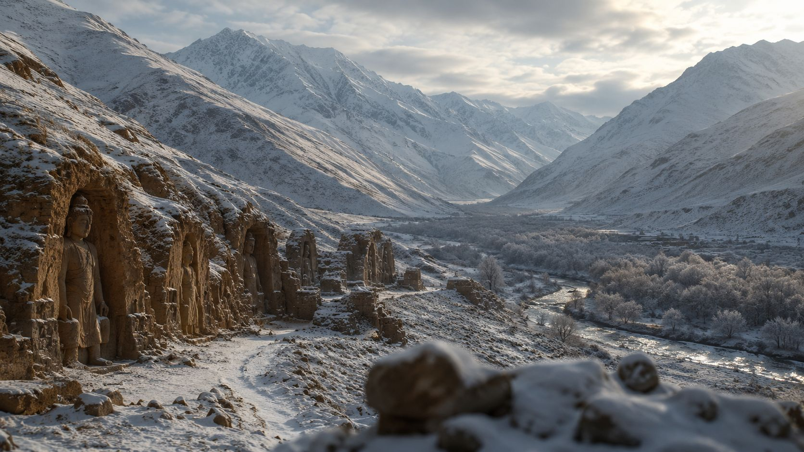
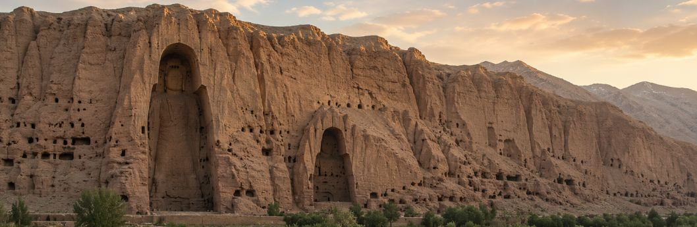
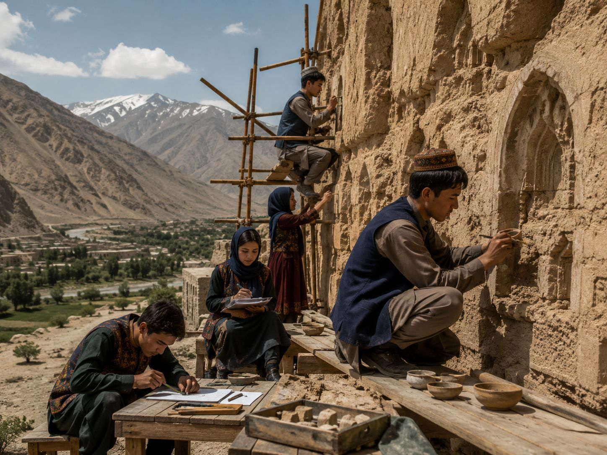
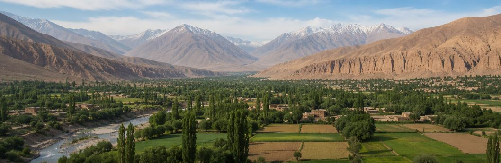

The Empty Niches of Bamyan
A valley that still remembers its Buddhas, and the people rewriting what heritage means.

Band-e-Amir: Afghanistan's First National Park
Travertine dams hold back water of an almost impossible blue.

Shahr-e Gholghola: The "City of Screams"
The silent citadel that fell to Genghis Khan still guards the valley.

The Cave Murals That Predate Europe's Oil Paintings
Inside the sanctuaries, pigments tell a story of a Silk Road crossroads.

The Young Hazara Conservators Stabilising the Cliff
A new generation trains to protect what remains of the valley's monuments.

Should the Buddhas Be Rebuilt? Inside a 20-Year Debate
Anastylosis, the eloquent void, and the ethics of reconstruction.
An Interactive Timeline of Bamyan
A Silk Road crossroads forms
Bamyan grows into a trading and pilgrimage hub linking Persia, Central Asia and India.
The colossal Buddhas are carved
Monks and craftsmen hew the two giant figures — 55m and 38m — into the sandstone cliff.
Xuanzang visits the valley
The Chinese pilgrim records a thriving monastic community and a giant reclining Buddha.
Genghis Khan destroys Shahr-e Gholghola
The Mongol siege gives the citadel its enduring name, the "City of Screams."
The Buddhas are destroyed
The statues are demolished with explosives, drawing global condemnation.
UNESCO World Heritage inscription
The valley is listed as World Heritage and simultaneously placed on the In-Danger list.
Band-e-Amir becomes a national park
Afghanistan designates its first national park around the valley's cobalt lakes.
Heritage as a living practice
A new generation documents, conserves and reimagines the valley's future.